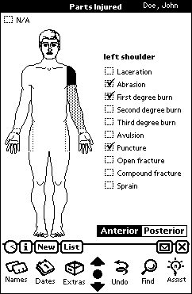

To clarify which part is currently selected, I added another level of highlighting to the interface. Tapping a part once turns it black. When a different part is tapped, the first one becomes grey and the second turns black.
Thus black identifies the single part to which the injury checkboxes apply. Grey parts, on the other hand, have been previously marked as injured, but their injury lists are not visible at the moment.
This two-level selection also enabled me to eliminate the “Remove Injured Part” button. Tapping a black part will turn it white, restoring it to health. Generally the user would need to “uninjure” the selected part only when correcting an ill-aimed tap. It is much easier to simply tap again in the same place to deselect the part than to tap a button all the way at the bottom of the screen and then attempt to reselect the correct area.
The “See Posterior” button was also changed, becoming an “Anterior/Posterior” toggle switch.
